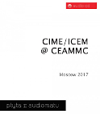

Date of composition: 2016
Duration: 9:28
Format: fixed medium sound (8ch)
Awards: First Prize, Concurso Fundacion Destellos, Mare del Plata, Argentina, 2017
Available to stream on Electrotheque.com 
Available on CD 'CIME/ICEM
@ CEAMMC'
Programme note: (download as PDF)
Skyline
The Blackbird’s song: immediately accessible and impenetrably complex; a single line and a complex web of counterpoint; endlessly inventive and always repeating itself; completely original and so well known; the peace of a garden and the irrepressible joy of creativity; performed daily and free of charge, in the grandest gardens and the bleakest urban slums; a music that belongs to all and is owned by none.
Skyline was composed in 2016 in the Electroacoustic Music Studios of Bangor University (Wales, UK) and premiered on October 20, 2016 at Theatr Bryn Terfel, Pontio, Bangor. The piece includes recordings of Bangor University’s Crossley-Holland collection of pre-Columbian Mexican wind instruments. My thanks to Susan Rawcliffe (flautist) and Scott Flesher (recording supervisor).